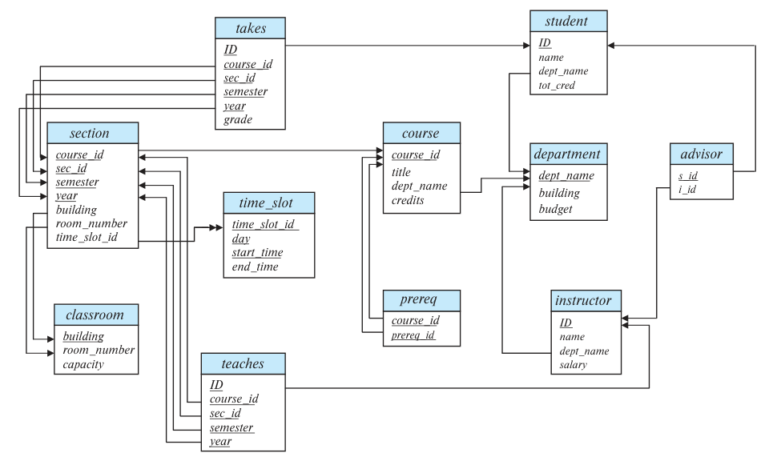

附录 A 大学数据库的完整模式
本附录给出贯穿全书的大学数据库示例的完整资料。A.1 节介绍正文使用的完整模式及其对应的 E-R 图；A.2 节提供较完整的 SQL 数据定义，除了各属性的数据类型，还包含许多约束；A.3 节给出符合该模式的示例数据。创建全部关系并填入示例数据的 SQL 脚本，可在本书网站 db-book.com 获取。
A.1 完整模式
下面列出正文使用的大学数据库完整模式。图 A.1 给出了相应的模式图，也是全书使用的模式图。
classroom(building, room_number, capacity) department(dept_name, building, budget) course(course_id, title, dept_name, credits) instructor(ID, name, dept_name, salary) section(course_id, sec_id, semester, year, building, room_number, time_slot_id) teaches(ID, course_id, sec_id, semester, year) student(ID, name, dept_name, tot_cred) takes(ID, course_id, sec_id, semester, year, grade) advisor(s_ID, i_ID) time_slot(time_slot_id, day, start_time, end_time) prereq(course_id, prereq_id)
下划线标出各关系的主键属性。

图 A.1 大学数据库的模式图。
图中关系名：classroom 为教室，department 为系，course 为课程，instructor 为教师，section 为课程开设的教学班，teaches 为授课记录，student 为学生，takes 为选课记录，advisor 为导师关系，time_slot 为上课时段，prereq 为先修课程关系。
属性名：building 为楼宇，room_number 为房间号，capacity 为容纳人数，dept_name 为系名，budget 为预算，course_id 为课程编号，title 为课程名称，credits 为学分，ID 为人员编号，name 为姓名，salary 为工资，sec_id 为教学班编号，semester 为学期，year 为年份，time_slot_id 为时段编号，tot_cred 为累计学分，grade 为成绩，s_id 为学生编号，i_id 为教师编号，day 为星期，start_time 和 end_time 为开始、结束时间，prereq_id 为先修课程编号。
A.2 数据定义语言（DDL）
本节为示例提供较完整的 SQL 数据定义。除了指定各属性的数据类型，我们还给出了许多约束。
create table classroom
(building varchar (15),
room_number varchar (7),
capacity numeric (4,0),
primary key (building, room_number));
create table department
(dept_name varchar (20),
building varchar (15),
budget numeric (12,2) check (budget > 0),
primary key (dept_name));
create table course
(course_id varchar (7),
title varchar (50),
dept_name varchar (20),
credits numeric (2,0) check (credits > 0),
primary key (course_id),
foreign key (dept_name) references department
on delete set null);
create table instructor
(ID varchar (5),
name varchar (20) not null,
dept_name varchar (20),
salary numeric (8,2) check (salary > 29000),
primary key (ID),
foreign key (dept_name) references department
on delete set null);
create table section
(course_id varchar (8),
sec_id varchar (8),
semester varchar (6) check (semester in
('Fall', 'Winter', 'Spring', 'Summer')),
year numeric (4,0) check (year > 1701 and year < 2100),
building varchar (15),
room_number varchar (7),
time_slot_id varchar (4),
primary key (course_id, sec_id, semester, year),
foreign key (course_id) references course
on delete cascade,
foreign key (building, room_number) references classroom
on delete set null);
在上述 DDL 中，如果某个元组依赖它所引用的元组才能存在，我们就在外键约束上添加 on delete cascade。例如，从弱实体 section 生成的 section 表到 course 表的外键约束，就指定了级联删除；两者之间原本存在标识联系。其他外键约束则指定 on delete set null，允许删除被引用元组，同时将引用值设为 null；或者不指定删除动作，从而禁止删除仍被引用的元组。例如，删除一个系时，我们不希望一并删除该系的教师。
instructor 到 department 的外键约束会将 dept_name 属性设为 null。后面给出的 prereq 关系则会阻止删除仍作为其他课程先修要求的课程。对于后面的 advisor 关系，删除教师时，允许将 i_ID 设为 null；删除被引用的学生时，则删除相应的 advisor 元组。
create table teaches
(ID varchar (5),
course_id varchar (8),
sec_id varchar (8),
semester varchar (6),
year numeric (4,0),
primary key (ID, course_id, sec_id, semester, year),
foreign key (course_id, sec_id, semester, year) references section
on delete cascade,
foreign key (ID) references instructor
on delete cascade);
create table student
(ID varchar (5),
name varchar (20) not null,
dept_name varchar (20),
tot_cred numeric (3,0) check (tot_cred >= 0),
primary key (ID),
foreign key (dept_name) references department
on delete set null);
create table takes
(ID varchar (5),
course_id varchar (8),
sec_id varchar (8),
semester varchar (6),
year numeric (4,0),
grade varchar (2),
primary key (ID, course_id, sec_id, semester, year),
foreign key (course_id, sec_id, semester, year) references section
on delete cascade,
foreign key (ID) references student
on delete cascade);
create table advisor
(s_ID varchar (5),
i_ID varchar (5),
primary key (s_ID),
foreign key (i_ID) references instructor (ID)
on delete set null,
foreign key (s_ID) references student (ID)
on delete cascade);
create table prereq
(course_id varchar(8),
prereq_id varchar(8),
primary key (course_id, prereq_id),
foreign key (course_id) references course
on delete cascade,
foreign key (prereq_id) references course);
下面为 time_slot 表给出的 create table 语句可以在多数数据库系统上运行，但不适用于 Oracle，至少截至 Oracle 11 版仍是如此，因为 Oracle 不支持 SQL 标准的 time 类型。
create table timeslot
(time_slot_id varchar (4),
day varchar (1) check (day in ('M', 'T', 'W', 'R', 'F', 'S', 'U')),
start_time time,
end_time time,
primary key (time_slot_id, day, start_time));
SQL 中指定时间的语法可见这些例子：'08:30'、'13:55' 和 '5:30 PM'。由于 Oracle 不支持 time 类型，我们改用下面的模式：
create table timeslot
(time_slot_id varchar (4),
day varchar (1),
start_hr numeric (2) check (start_hr >= 0 and end_hr < 24),
start_min numeric (2) check (start_min >= 0 and start_min < 60),
end_hr numeric (2) check (end_hr >= 0 and end_hr < 24),
end_min numeric (2) check (end_min >= 0 and end_min < 60),
primary key (time_slot_id, day, start_hr, start_min));
译注：原书这两段 DDL 的表名均写作
timeslot，前面的模式与正文使用time_slot。第二段start_hr的检查条件原样写成start_hr >= 0 and end_hr < 24；若要限制开始小时的有效范围，上界应检查start_hr < 24。以上代码保留原书写法，实际使用时应统一表名并修正该条件。
区别在于，start_time 被拆为 start_hr 和 start_min 两个属性，end_time 也相应拆为 end_hr 和 end_min。
这些属性还设有约束，确保其中的数字只表示有效时间。这一版 time_slot 模式可用于包括 Oracle 在内的所有数据库。注意，虽然 Oracle 支持 datetime 数据类型，但它除了时间还包含具体的年、月、日；此处只需要时间，因此不适用。除了把时间分成小时和分钟，还有两种方案，但都不理想：其一是使用 varchar，这样既难以约束字符串的有效性，也难以比较时间；其二是将时间编码为自午夜起经过的分钟数或秒数，但每个查询都需要额外代码，在标准时间表示与整数编码之间转换。我们因此选择将时间分为两部分。
A.3 示例数据
本节给出上一节定义的各个关系的示例数据。
图 A.2 classroom 关系：教室
| building（楼宇） | room_number（房间号） | capacity（容纳人数） |
|---|---|---|
| Packard | 101 | 500 |
| Painter | 514 | 10 |
| Taylor | 3128 | 70 |
| Watson | 100 | 30 |
| Watson | 120 | 50 |
图 A.3 department 关系：系
| dept_name（系名） | building（楼宇） | budget（预算） |
|---|---|---|
| Biology | Watson | 90000 |
| Comp. Sci. | Taylor | 100000 |
| Elec. Eng. | Taylor | 85000 |
| Finance | Painter | 120000 |
| History | Painter | 50000 |
| Music | Packard | 80000 |
| Physics | Watson | 70000 |
系名释义：Biology 为生物学，Comp. Sci. 为计算机科学，Elec. Eng. 为电气工程，Finance 为金融，History 为历史，Music 为音乐，Physics 为物理。
图 A.4 course 关系：课程
| course_id（课程编号） | title（课程名称） | dept_name（系名） | credits（学分） |
|---|---|---|---|
| BIO-101 | Intro. to Biology | Biology | 4 |
| BIO-301 | Genetics | Biology | 4 |
| BIO-399 | Computational Biology | Biology | 3 |
| CS-101 | Intro. to Computer Science | Comp. Sci. | 4 |
| CS-190 | Game Design | Comp. Sci. | 4 |
| CS-315 | Robotics | Comp. Sci. | 3 |
| CS-319 | Image Processing | Comp. Sci. | 3 |
| CS-347 | Database System Concepts | Comp. Sci. | 3 |
| EE-181 | Intro. to Digital Systems | Elec. Eng. | 3 |
| FIN-201 | Investment Banking | Finance | 3 |
| HIS-351 | World History | History | 3 |
| MU-199 | Music Video Production | Music | 3 |
| PHY-101 | Physical Principles | Physics | 4 |
课程名称释义：Intro. to Biology 为生物学导论，Genetics 为遗传学，Computational Biology 为计算生物学，Intro. to Computer Science 为计算机科学导论，Game Design 为游戏设计，Robotics 为机器人学，Image Processing 为图像处理，Database System Concepts 为数据库系统概念，Intro. to Digital Systems 为数字系统导论，Investment Banking 为投资银行学，World History 为世界史，Music Video Production 为音乐视频制作，Physical Principles 为物理原理。
图 A.5 instructor 关系：教师
| ID（教师编号） | name（姓名） | dept_name（系名） | salary（工资） |
|---|---|---|---|
| 10101 | Srinivasan | Comp. Sci. | 65000 |
| 12121 | Wu | Finance | 90000 |
| 15151 | Mozart | Music | 40000 |
| 22222 | Einstein | Physics | 95000 |
| 32343 | El Said | History | 60000 |
| 33456 | Gold | Physics | 87000 |
| 45565 | Katz | Comp. Sci. | 75000 |
| 58583 | Califieri | History | 62000 |
| 76543 | Singh | Finance | 80000 |
| 76766 | Crick | Biology | 72000 |
| 83821 | Brandt | Comp. Sci. | 92000 |
| 98345 | Kim | Elec. Eng. | 80000 |
图 A.6 section 关系：教学班
| course_id（课程编号） | sec_id（教学班编号） | semester（学期） | year（年份） | building（楼宇） | room_number（房间号） | time_slot_id（时段编号） |
|---|---|---|---|---|---|---|
| BIO-101 | 1 | Summer | 2017 | Painter | 514 | B |
| BIO-301 | 1 | Summer | 2018 | Painter | 514 | A |
| CS-101 | 1 | Fall | 2017 | Packard | 101 | H |
| CS-101 | 1 | Spring | 2018 | Packard | 101 | F |
| CS-190 | 1 | Spring | 2017 | Taylor | 3128 | E |
| CS-190 | 2 | Spring | 2017 | Taylor | 3128 | A |
| CS-315 | 1 | Spring | 2018 | Watson | 120 | D |
| CS-319 | 1 | Spring | 2018 | Watson | 100 | B |
| CS-319 | 2 | Spring | 2018 | Taylor | 3128 | C |
| CS-347 | 1 | Fall | 2017 | Taylor | 3128 | A |
| EE-181 | 1 | Spring | 2017 | Taylor | 3128 | C |
| FIN-201 | 1 | Spring | 2018 | Packard | 101 | B |
| HIS-351 | 1 | Spring | 2018 | Painter | 514 | C |
| MU-199 | 1 | Spring | 2018 | Packard | 101 | D |
| PHY-101 | 1 | Fall | 2017 | Watson | 100 | A |
学期值：Summer 为夏季学期，Fall 为秋季学期，Spring 为春季学期。
图 A.7 teaches 关系：授课
| ID（教师编号） | course_id（课程编号） | sec_id（教学班编号） | semester（学期） | year（年份） |
|---|---|---|---|---|
| 10101 | CS-101 | 1 | Fall | 2017 |
| 10101 | CS-315 | 1 | Spring | 2018 |
| 10101 | CS-347 | 1 | Fall | 2017 |
| 12121 | FIN-201 | 1 | Spring | 2018 |
| 15151 | MU-199 | 1 | Spring | 2018 |
| 22222 | PHY-101 | 1 | Fall | 2017 |
| 32343 | HIS-351 | 1 | Spring | 2018 |
| 45565 | CS-101 | 1 | Spring | 2018 |
| 45565 | CS-319 | 1 | Spring | 2018 |
| 76766 | BIO-101 | 1 | Summer | 2017 |
| 76766 | BIO-301 | 1 | Summer | 2018 |
| 83821 | CS-190 | 1 | Spring | 2017 |
| 83821 | CS-190 | 2 | Spring | 2017 |
| 83821 | CS-319 | 2 | Spring | 2018 |
| 98345 | EE-181 | 1 | Spring | 2017 |
图 A.8 student 关系：学生
| ID（学生编号） | name（姓名） | dept_name（系名） | tot_cred（累计学分） |
|---|---|---|---|
| 00128 | Zhang | Comp. Sci. | 102 |
| 12345 | Shankar | Comp. Sci. | 32 |
| 19991 | Brandt | History | 80 |
| 23121 | Chavez | Finance | 110 |
| 44553 | Peltier | Physics | 56 |
| 45678 | Levy | Physics | 46 |
| 54321 | Williams | Comp. Sci. | 54 |
| 55739 | Sanchez | Music | 38 |
| 70557 | Snow | Physics | 0 |
| 76543 | Brown | Comp. Sci. | 58 |
| 76653 | Aoi | Elec. Eng. | 60 |
| 98765 | Bourikas | Elec. Eng. | 98 |
| 98988 | Tanaka | Biology | 120 |
图 A.9 takes 关系：选课
| ID（学生编号） | course_id（课程编号） | sec_id（教学班编号） | semester（学期） | year（年份） | grade（成绩） |
|---|---|---|---|---|---|
| 00128 | CS-101 | 1 | Fall | 2017 | A |
| 00128 | CS-347 | 1 | Fall | 2017 | A- |
| 12345 | CS-101 | 1 | Fall | 2017 | C |
| 12345 | CS-190 | 2 | Spring | 2017 | A |
| 12345 | CS-315 | 1 | Spring | 2018 | A |
| 12345 | CS-347 | 1 | Fall | 2017 | A |
| 19991 | HIS-351 | 1 | Spring | 2018 | B |
| 23121 | FIN-201 | 1 | Spring | 2018 | C+ |
| 44553 | PHY-101 | 1 | Fall | 2017 | B- |
| 45678 | CS-101 | 1 | Fall | 2017 | F |
| 45678 | CS-101 | 1 | Spring | 2018 | B+ |
| 45678 | CS-319 | 1 | Spring | 2018 | B |
| 54321 | CS-101 | 1 | Fall | 2017 | A- |
| 54321 | CS-190 | 2 | Spring | 2017 | B+ |
| 55739 | MU-199 | 1 | Spring | 2018 | A- |
| 76543 | CS-101 | 1 | Fall | 2017 | A |
| 76543 | CS-319 | 2 | Spring | 2018 | A |
| 76653 | EE-181 | 1 | Spring | 2017 | C |
| 98765 | CS-101 | 1 | Fall | 2017 | C- |
| 98765 | CS-315 | 1 | Spring | 2018 | B |
| 98988 | BIO-101 | 1 | Summer | 2017 | A |
| 98988 | BIO-301 | 1 | Summer | 2018 | null |
图 A.10 advisor 关系：导师
| s_id（学生编号） | i_id（教师编号） |
|---|---|
| 00128 | 45565 |
| 12345 | 10101 |
| 23121 | 76543 |
| 44553 | 22222 |
| 45678 | 22222 |
| 76543 | 45565 |
| 76653 | 98345 |
| 98765 | 98345 |
| 98988 | 76766 |
图 A.11 time_slot 关系：上课时段
| time_slot_id（时段编号） | day（星期） | start_time（开始时间） | end_time（结束时间） |
|---|---|---|---|
| A | M | 8:00 | 8:50 |
| A | W | 8:00 | 8:50 |
| A | F | 8:00 | 8:50 |
| B | M | 9:00 | 9:50 |
| B | W | 9:00 | 9:50 |
| B | F | 9:00 | 9:50 |
| C | M | 11:00 | 11:50 |
| C | W | 11:00 | 11:50 |
| C | F | 11:00 | 11:50 |
| D | M | 13:00 | 13:50 |
| D | W | 13:00 | 13:50 |
| D | F | 13:00 | 13:50 |
| E | T | 10:30 | 11:45 |
| E | R | 10:30 | 11:45 |
| F | T | 14:30 | 15:45 |
| F | R | 14:30 | 15:45 |
| G | M | 16:00 | 16:50 |
| G | W | 16:00 | 16:50 |
| G | F | 16:00 | 16:50 |
| H | W | 10:00 | 12:30 |
星期代码：M 为星期一，T 为星期二，W 为星期三，R 为星期四，F 为星期五；前面 DDL 中的 S、U 分别表示星期六和星期日。
图 A.12 prereq 关系：先修课程
| course_id（课程编号） | prereq_id（先修课程编号） |
|---|---|
| BIO-301 | BIO-101 |
| BIO-399 | BIO-101 |
| CS-190 | CS-101 |
| CS-315 | CS-101 |
| CS-319 | CS-101 |
| CS-347 | CS-101 |
| EE-181 | PHY-101 |
图 A.13 time_slot 关系：上课时段（小时、分钟分别存储）
| time_slot_id（时段编号） | day（星期） | start_hr（开始小时） | start_min（开始分钟） | end_hr（结束小时） | end_min（结束分钟） |
|---|---|---|---|---|---|
| A | M | 8 | 0 | 8 | 50 |
| A | W | 8 | 0 | 8 | 50 |
| A | F | 8 | 0 | 8 | 50 |
| B | M | 9 | 0 | 9 | 50 |
| B | W | 9 | 0 | 9 | 50 |
| B | F | 9 | 0 | 9 | 50 |
| C | M | 11 | 0 | 11 | 50 |
| C | W | 11 | 0 | 11 | 50 |
| C | F | 11 | 0 | 11 | 50 |
| D | M | 13 | 0 | 13 | 50 |
| D | W | 13 | 0 | 13 | 50 |
| D | F | 13 | 0 | 13 | 50 |
| E | T | 10 | 30 | 11 | 45 |
| E | R | 10 | 30 | 11 | 45 |
| F | T | 14 | 30 | 15 | 45 |
| F | R | 14 | 30 | 15 | 45 |
| G | M | 16 | 0 | 16 | 50 |
| G | W | 16 | 0 | 16 | 50 |
| G | F | 16 | 0 | 16 | 50 |
| H | W | 10 | 0 | 12 | 30 |
图片来源
本附录开头的帆船照片版权为 © Pavel Nesvadba/Shutterstock。